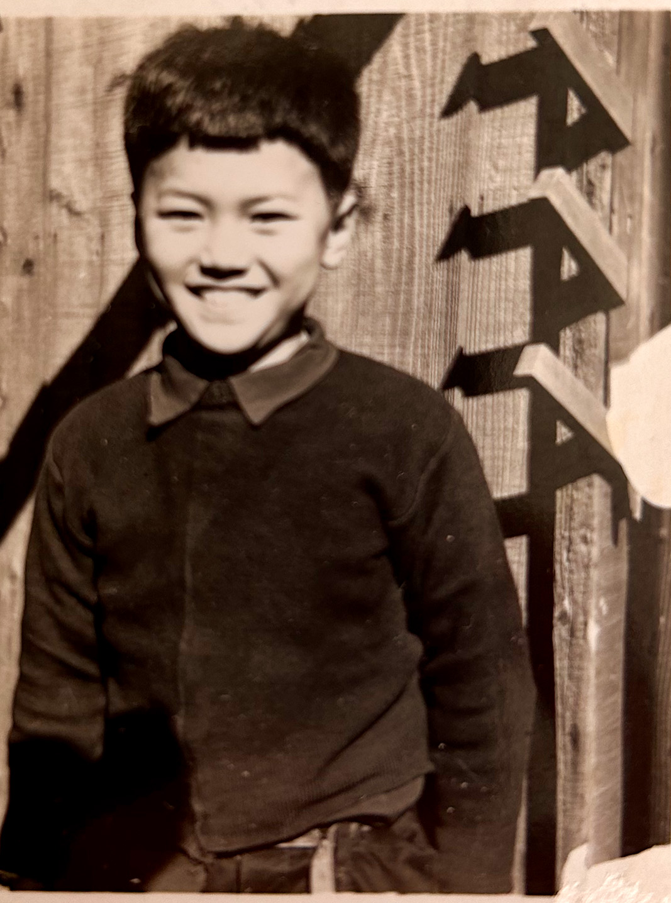
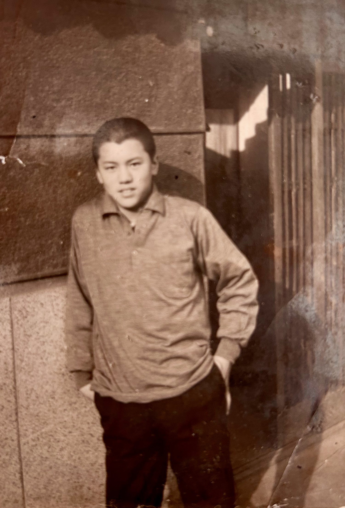
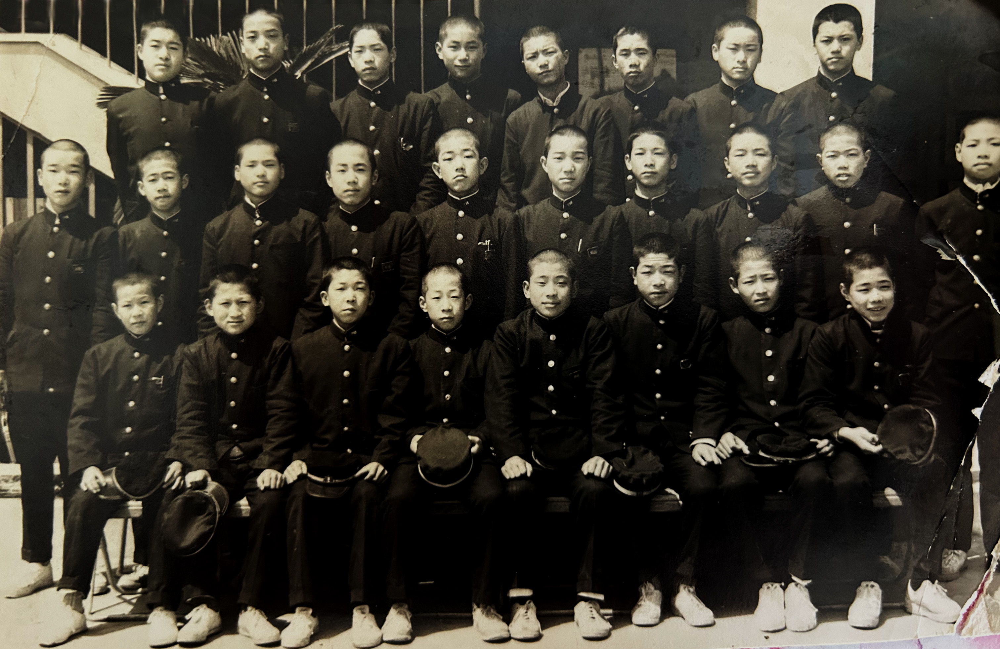

Photographs
Photographs spanning the postwar decades: a boyhood traced across three frames, from a wooden fence to a middle-school courtyard; two brothers on a postwar Kansai street; a young man at work during the 1970 Osaka World's Fair; a woman with her newborn son. These images carry what the koseki cannot — faces, clothing, weather, the texture of everyday life in the moments the registers only note as dates and place names.
Teruhiro and Kazuhide: Postwar childhood

Teruhiro (left, approximately 7 or 8 years old) and Kazuhide (right, approximately 4 or 5 years old) stand on a street in postwar Kansai — likely in the Imazato district of Osaka where their parents kept the shoemaker's shop, or possibly in Nara during a visit to the old family seat at Hayashikōji-chō. The clothing — hand-knitted sweater with geometric pattern, simple cotton trousers — speaks to the immediate postwar years when such garments were carefully made at home. The wooden utility poles behind them and the modest buildings on either side mark the working-class neighborhoods where the family lived.
The photograph captures a moment between Keinosuke's return from Manchukuo and the family's later moves. Teruhiro is already the boy who will, within a decade, work at Expo '70 to fund his crossing into the West. Kazuhide is the brother who will remain in Japan, anchoring the family through the postwar decades until his own move to Bangkok.
Teruhiro: A boyhood in three frames
Three solo portraits, set in sequence, carry Teruhiro from lower-elementary age to the middle-school years — roughly the span of the 1950s into the early 1960s. Read together they track the same boy growing: the home-knit sweater giving way to a knit polo and then to the black gakuran, the rural plank fence giving way to a city street and finally a school courtyard. Dates are estimated from apparent age, clothing, and setting against his February 1948 birth, and remain open to correction.

Teruhiro at perhaps six or seven, grinning openly into the lens against a weathered plank fence. He wears a hand-knitted crew sweater over a collared shirt — the home-made winter clothing of the mid-1950s, of a piece with the geometric-patterned sweater in the photograph of the two brothers. The broad, unguarded smile is itself a small rarity: street and studio portraits of this era usually fix children in solemn stillness.
Behind him, bold black strokes climb the planks at an angle — most likely the surviving fragment of a vertical painted signboard, its full text lost beyond the edge of the frame. His lower-elementary age places this within a year or two of the brothers' street photograph, in the same postwar Kansai of carefully made clothes and weathered wood.

A few years on — Teruhiro at perhaps ten to twelve, in upper elementary school or on the cusp of middle school. The home-knit sweater has given way to a casual long-sleeved knit polo, and he leans with hands in pockets, with the slightly studied ease of an older boy. The setting is unmistakably urban: a building faced in large dressed-granite blocks, with a recessed entrance closed by a vertical metal grille and glass door.
That rusticated stone base is the signature of prewar, Western-style commercial or institutional architecture — a bank, a public office, or a substantial shopfront — the kind that lined the main streets of Osaka. The building itself is not yet identified. If it can be placed, it would help fix where the family stood in the years the registers leave vague, before the registry's transfer to Ikuno-ku in 1965.

Teruhiro stands in the back row, at the far right — identified by his son. By his February 1948 birth this falls within his middle-school years, April 1960 to March 1963, most likely the second or third year. The class wear the standard black gakuran with metal buttons and stand collars; the seated front row hold their school caps; white canvas gym shoes line the foreground. They are arranged before a reinforced-concrete school building, an external staircase and railing to one side, a cycad (蘇鉄, sotetsu) — that quintessential Kansai schoolyard plant — at the left.
On Teruhiro's stand collar sits a small rectangular metal badge, and a second crest catches the light on a cap held in the front row. With the family living at Shin-Imazato 5-chōme in these years, the catchment points to 大阪市立東生野中学校 (Higashi-Ikuno Junior High), which served the Nakagawa and Shōji districts and stood within Shin-Imazato itself; in the early 1960s — Teruhiro's years there — it had grown past three thousand pupils, a scale that suits these crowded rows. Reading the badge against the school's own crest, kept in its anniversary history, would turn a strong inference into a certainty.
Expo '70: A window into work and ambition

A young man — Teruhiro, in his early twenties — works at a vendor stall at Expo '70, the Osaka World's Fair. The photograph captures him in the midst of the work that would fund his departure: he is dressed in a simple white short-sleeved shirt; behind him, merchandise is displayed with price tags (visible at ¥60, ¥40); shelves hold what appear to be packaged goods or souvenirs. The setting has the purposeful bustle of a commercial fair — merchandise, signage, the apparatus of commerce.
This is the pivot moment in his life: the work at Expo '70, as he would later tell his son, was not the destination but the means. Every yen saved here was directed toward a single goal — a ticket west. Within a few years of this photograph, he would board the Trans-Siberian Railway, arrive at Helsinki, study art in Paris, keep house in London, and settle in Finland. The work visible in this image is the material foundation of that crossing.
Toshie with newborn Teruhiro

Toshie, cradling the newborn Teruhiro. This hand-tinted or early color photograph was taken in the days after his birth — likely at the Uratani family compound at Ōkubo, where she had returned to give birth in the custom of 里帰り出産 (satogaeri shussan), the expectant mother's return to her own family's home for the birth. Teruhiro was born on 10 February 1948, the same day Keinosuke and Toshie's marriage was officially registered — a compression of events that marks the turmoil of the immediate postwar years, when administrative formalities and family rituals were compressed into urgent practical necessities.
Toshie's expression is serene; her clothing is simple and carefully worn. The infant is swaddled in white cloth — the garments that would stretch across his infancy in postwar Osaka. She would raise this child through the poverty and reconstruction of the 1950s, the economic growth of the 1960s, and into his young adulthood.